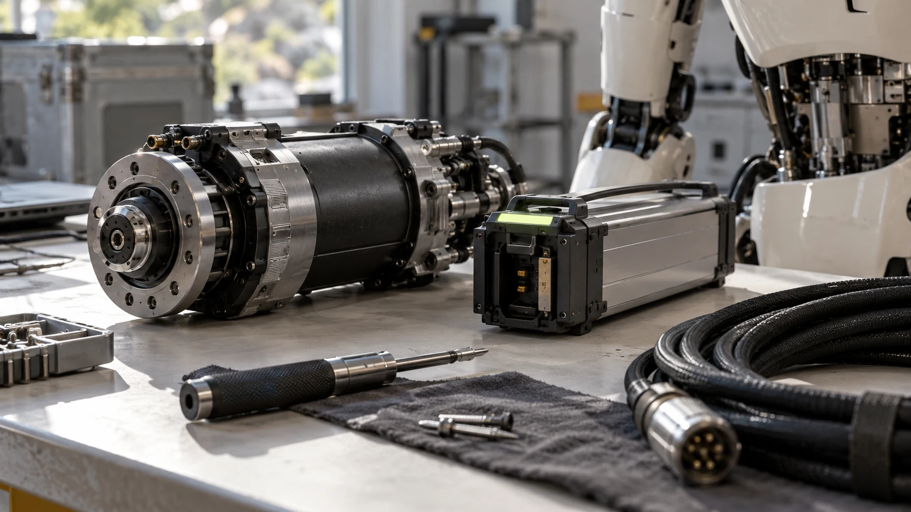

Compare complete project scopes in the seller’s original currency before comparing headline prices.
A published robot price is a starting point, not a complete project budget. It may describe a base configuration, exclude shipping, or omit the software access your team needs. A better budget follows the robot from the manufacturer’s listing to a working, supported application in your environment.
Start with an exact configuration
Record the model name, hardware revision, included end effectors, controller, and development permissions. Two offers with the same family name can contain different hardware or software rights. Request an itemized quote so that the scope remains clear after accessories, support, or quantities change.
Separate acquisition and integration
Acquisition can include freight, import handling, taxes, and site delivery. Integration can include fixtures, engineering time, training, network preparation, and application development. Keep these categories separate: doing so makes it easier to see whether a cheaper purchase creates more work elsewhere.
Budget for operation and interruption
Ask about service coverage, spare parts, replacement batteries where applicable, and recurring software fees. Include the time spent supervising the application and restoring operation after a fault. An inexpensive part can still create an expensive interruption if it has a long replacement lead time.

Compare like with like
Retain the original currency and quote date. If you create a converted budget, record the exchange rate separately rather than presenting the conversion as the seller’s price. Use a simple scope table to compare what is included, excluded, optional, and still unknown for each candidate.
Build the budget around one working scenario
Start with a hypothetical single-robot pilot at one workstation. Make a worksheet with separate rows for the purchased platform, required accessories, delivery, installation, application engineering, training, and support. Add an owner and an evidence status to every row. A quoted amount belongs in a different state from an internal estimate or an unresolved question. This makes the budget useful before every number is known. It also stops an apparently complete total from hiding missing work. Describe the number of trial weeks and the expected operating schedule so that everyone understands the scope behind the estimate before comparing it with another proposal.
Show internal time as a real dependency
A team may already employ the engineers who will integrate the robot, but their time still has consequences for the project. Record expected activities rather than assigning one unexplained engineering allowance. Examples include reproducing a supported software example, designing a fixture, preparing sample objects, collecting trial results, and writing recovery instructions. Ask the people doing the work to review those assumptions. If the organization chooses to absorb that effort internally, the decision remains visible. This helps distinguish a platform that is cheaper to buy from one that is easier for this particular team to put into useful operation.
Make uncertainty visible without inventing precision
Use a small number of scenarios when important costs remain unclear. A base case might assume that existing infrastructure is suitable; a second case could include a dedicated workstation or additional supplier assistance. Explain the assumption that changes between them. Do not attach precise probabilities simply to make the table appear sophisticated. Instead, identify the next piece of evidence that would narrow the range, such as a site review or an itemized service proposal. Set a date for revisiting the budget after that evidence arrives. A clearly explained range is more useful than a single total assembled from incompatible levels of confidence.
Agree on what happens after the pilot
The end of a pilot can create its own costs and decisions. Ask whether equipment remains with the buyer, must be returned, or moves into a different support arrangement. Record who handles packaging, transport, data export, and removal of temporary fixtures where those activities apply. For a continuing project, build a separate operating estimate that reflects the observed trial rather than copying the initial purchase budget. Include any recurring service commitments in the commercial comparison. Keeping these decisions visible helps the team judge the whole evaluation and its possible outcomes, instead of treating the initial payment as the only meaningful financial event.
Your next step.
- Get an itemized, dated quote.
- Separate acquisition, integration, and recurring costs.
- Assign a budget owner to unresolved items.
Sources & further reading
Primary sources and manufacturer documentation for the examples and further investigation. Recommendations in this article are HUMANOID’s editorial guidance.
Unitree: G1 official listing ↗1X: NEO order options ↗Originally prepared and references reviewed: 24 October 2026. Expanded with practical guidance and original illustrations: 25 October 2026. Editorial archive date: 12 Oct 2026. This is original editorial content, not a record of a historical product launch, independent test, or purchase.